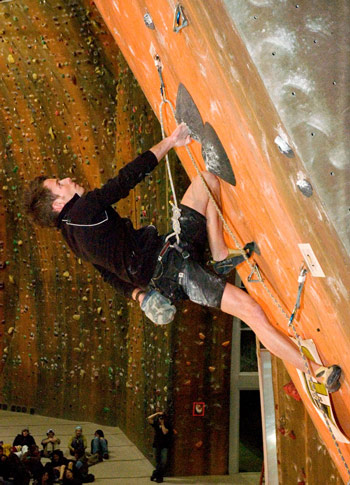

|
e-Grips Routesetting Interview: Jeremy Hardin 
eG: Where to begin…. So many questions… let’s start with your setting history - How long have you been climbing and setting? Where did you get your start? JH: I’ve been climbing for about seven years now and have always been throwing holds on the wall, but I took over as Director of Routesetting at Sportrock Climbing centers almost 4 years ago. eG: You set for the Sportrock gyms in Virginia – two pretty large facilities – do you manage a large crew or are you a workhorse getting most of the setting done yourself? JH: I set about 90% of the gyms myself and have guest setter, Claudiu Vidulescu and another setter, James Anastasion a few times a month, both of which were previous Sportrock head routesetters. Each gym has about 12,000+ sq feet so it’s a non-stop ordeal, and in these gyms quality is looked at just as much as quantity. With a turn over rate of 6-8 weeks, that’s both gyms, there’s no room for a bad day. The members here will literally throw a fit if their bouldering area is more than a month old. eG: How do you like working at a well-established business like Sportrock? Benefits? Perks? Do you have time to climb much indoors or out? or is routesetting your climbing work-out? JH: I wouldn’t have it any other way. We’re not your average college drop-out managed gym, Sportrock is one of the most professionally run and “corporate” gyms in the US, our management team is top notch and keep things in line. I’m able to get out every weekend, but when you pretty much sleep with wrenches and climbing shoes during the week, it’s not always first on my list to do on the weekends. eG: You live in the DC area – which most people don’t consider a climber’s destination. But from my recollection having worked at the Sportrock gyms – there’s a pretty diverse crowd, including a fair number of international climbers who come through. What is the community like? Different at each facility? JH: Yeah, different at each facility. Alexandria is the city crowd, cats in the 25 range, looking to advance their climbing, Sterling’s more of the suburban housewife, family oriented crowd. But like you said we get some international climbers pretty often. They come for a few months then take off. I like hearing what they’re use to at their local gyms, and training styles. Most of them stay in touch after they leave too. eG: And I hear there is a big renovation going on at one of the gyms? Sounds exciting… JH: Yeah, we’re DOUBLING our Alexandria location. We were able to takeover the building next to us making our total floorspace in the area of 18,000 sq ft. We’re adding nearly 7,000 sq feet of climbing space with some world class bouldering and top rope sections, as well as updating the whole facility. To give you an idea, picture the Pyramid climbing walls used at the World Cup and Mammut comps for our bouldering area then add a huge canyon of instructional and kid activity walls to thin out our top-rope and lead areas for members. This gym is without a doubt one of the busiest gyms in the US and needs the extra space. eG: Will this new addition add more work to your plate…? Sounds like you set non-stop as it is, are you getting any assistance or are you just like… the energizer bunny? JH: Unfortunately, I eat on a garbage can lid so there’s always room for more. Even tho we’re adding the additional wall space, our turn over rate will not change. I’ll probably see about adding another guest setter once or twice a month to help out. eG: For someone who’s been setting for a few years now professionally – are there any tips or tricks you’ve learned to not get too beat up by the physical challenge of keeping in shape and being on ladders or in harnesses all day, tightening plastic to a wall? How about to maintain efficiency and motivation? JH: No matter what, your body isn’t going to be able to set forever, but here’s a couple tips that I think are gonna help extend my expiration. First, if you’re a setter that works in a gym where you have to set in a harness…….quit! Seriously, setting in a harness is like……well, eating skunks. Sure it’s gonna fill you up but really you don’t need to, its bad for your body and it stinks. Second, throw that t-wrench or even ratchet away (there is a time and a place for these, and it’s not commercial setting). Setting all day with those Cro-Magnon tools is gonna wreck your wrists and shoulders. The professional setter needs to use ladders, trade secrets, and an impact drill to set efficiently and healthy. As far as staying in shape goes, the most important thing even above working out is eating well and getting sleep. eG: You’ve gotten more and more involved in the higher level competition scene, setting some big on-sight events and competing as well. What have you learned along the way that helps your setting for comps? JH: When I was first invited out to Nationals, I thought there was going to be so much ego involved. So I like harded up, you know started eating nails in the mornings, drinking whiskey with my cereal, real hardcore setter stuff… But when I finally got there, man, completely different! Everybody works so well with each other and the criticism that is given is out of trying to make the best comp possible not putting anyone down. Just in the few years I’ve been around we’ve even taken that a step further and it’s become almost like a family. eG: Setting for youth is a real challenge. You’ve worked with some of the most experienced setters of the Yaniro tradition. Can you elucidate the methodology used in this classic style – any tips for new setters learning the trade? JH: First did you have to get someone to help spell elucidate? Hahaha, I like seeing an educated setter! I’m definitely not the person someone should be asking to talk about the Yaniro tradition. The Yaniro style of setting to me involves climbing movement that is very static and requires finding the correct body position on mono-directional types of holds. It’s not exactly “showy” but it gets the job done. It’s easy to tweak to increase or decrease grade, and separates climbers based on that skill all the way to the end of the route. MOST of the best setters in the U.S were brought up with this style and still use it today………That being said………..It’s not my cup of tea! I prefer big ol’ comp style, showy, guerrilla killin, gangster moves that are going to make the average joe, someone who knows dogshit about climbing, stop and say “I have no idea what that was but I can’t turn away…here’s my wallet” eG: How does setting for competition affect your approach to general commercial routesetting? JH: It’s actually really hard to bring what you get from Nationals back to the gym. You’re going to be able to bring back different styles and little tips that might make you more efficient but it’s almost frustrating. At Nationals we get to spend so much time on one route, we can tweak and run it, tweak and run it, making it exactly what we want, by the end we have a route that would make Jesus smile. But you don’t have that time in commercial setting, you have to learn to set the best route possible on the flow. eG: Do you have any favorite e-Grips hold sets? If so, which ones? Do you have any memories of e-Grips routes or problems you’ve climbed on or set that you really felt stood out? JH: I got lots of favs, the patina crimps and flakes, the solar system set, but right now I’d have to say I’m loving on the demi-loaves. I had a finals route for youth b and up boys last ABS nationals that had a really dope dyno between some wonder holes, that one stands out. eG: Any setting trademarks? What would you say your style is, if you have one? What are your favorite styles of movement? JH: Trademark moves gotta be the double toe hook. It’s showy and puts the food on the table. Like I said earlier about style, my style is……. Entertainment. eG: Thanks Jeremy! Have a great summer and have fun with the new walls! Keep your eye out for some Mini Hueco Wonder Holes in the near future… |